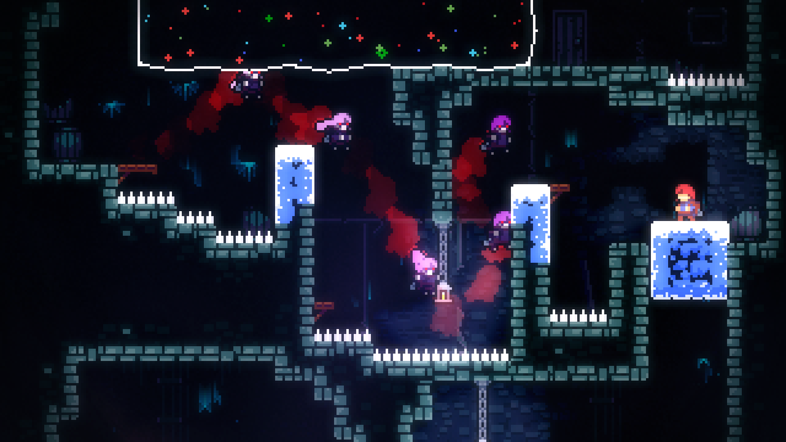

Trong bài này
Tầng 1 · Bài 04
Flow và độ khó
Quá dễ thì chán, quá khó thì nản — chỗ ở giữa mới là nơi người chơi ở lại.
Sau bài này bạn sẽ
- Vẽ đồ thị flow (thử thách và kỹ năng)
- Nhận diện dấu hiệu lo âu và nhàm chán
- Thiết kế đường cong độ khó có nhịp lên xuống
Cùng một con boss, hai trải nghiệm khác hẳn
Một người chơi mới chết 20 lần trước cùng một con boss, rồi tắt game. Một người chơi quen tay hạ nó trong 2 phút, rồi thấy nhạt, cũng tắt game. Cùng một con boss, cùng một bộ chỉ số sát thương — hai kết quả trái ngược.
Vấn đề không nằm ở việc boss "khó" hay "dễ". Câu hỏi đúng phải là: độ khó này so với kỹ năng của ai? Đó chính là thứ mô hình flow cố gắng trả lời.
Flow là gì
Mihaly Csikszentmihalyi, nhà tâm lý học nghiên cứu trải nghiệm này từ thập niên 1970, viết trong Flow: The Psychology of Optimal Experience (1990), nguyên văn:
Mihaly Csikszentmihalyi — Flow: The Psychology of Optimal Experience, 1990
"Enjoyment appears at the boundary between boredom and anxiety, when the challenges are just balanced with the person's capacity to act." (niềm vui xuất hiện ở ranh giới giữa nhàm chán và lo âu, khi thử thách vừa cân bằng với năng lực hành động của người đó)
Nói cách khác: niềm vui không nằm ở "dễ" hay "khó" tuyệt đối, mà nằm ở đúng ranh giới giữa hai thái cực nhàm chán và lo âu.
- 1 Anxiety — thử thách vượt xa kỹ năng
- 2 Flow channel — thử thách và kỹ năng cân bằng, cùng tăng dần
- 3 Boredom — kỹ năng vượt xa thử thách
"Thấp-thấp" không phải là flow
Mô hình gốc năm 1975 từng cho rằng cả thử thách lẫn kỹ năng đều thấp cũng tính là flow, miễn hai bên cân bằng. Nghiên cứu sau đó buộc Csikszentmihalyi phải sửa lại: người ta không thấy vui khi cả hai đều thấp hơn mức họ đã quen. Bản 1990 chốt lại — flow chỉ xảy ra khi thử thách và kỹ năng vừa cân bằng, vừa ở trên mức trung bình quen thuộc của chính người đó. Đây là điểm nhiều tài liệu game design tóm tắt hay bỏ sót.
Tám thành tố của trải nghiệm flow
Trong cùng chương sách trên, Csikszentmihalyi viết, nguyên văn: "the phenomenology of enjoyment has eight major components." (hiện tượng học của niềm vui có tám thành tố chính). Tám thành tố đó là:
- Đối mặt nhiệm vụ có cơ hội hoàn thành được (a task we have a chance of completing)
- Có khả năng tập trung vào việc đang làm (able to concentrate)
- Nhiệm vụ có mục tiêu rõ ràng (clear goals)
- Có phản hồi tức thì (immediate feedback)
- Dấn thân sâu nhưng không gượng ép, quên hết lo âu đời thường (deep but effortless involvement)
- Cảm giác kiểm soát được hành động của mình (a sense of control)
- Cái tôi biến mất lúc chơi, nhưng mạnh lên sau khi trải nghiệm kết thúc (sense of self emerges stronger)
- Cảm nhận về thời gian bị biến đổi (transformation of the sense of time)
Bốn thành tố dễ áp dụng nhất khi thiết kế game:
| Thành tố | Ứng dụng trong thiết kế |
|---|---|
| Mục tiêu rõ ràng | người chơi luôn biết chính xác việc cần làm tiếp theo, ví dụ một chỉ dấu quest đơn giản trên màn hình. |
| Phản hồi tức thì | mỗi hành động có phản hồi ngay, ví dụ số sát thương hiện lên đúng lúc vũ khí trúng đòn. |
| Cảm giác kiểm soát | input phản hồi mượt, không độ trễ, người chơi thấy mình thật sự làm chủ nhân vật. |
| Méo cảm nhận thời gian | ngồi vào "chơi tạm 10 phút" rồi ngẩng lên đã hai tiếng, dấu hiệu quen thuộc của một phiên chơi trong flow. |
Đừng nhầm với danh sách của Schell
Jesse Schell, trong The Art of Game Design, đưa ra danh sách riêng của ông, chỉ gồm 4 thành tố: Clear goals, No distractions, Direct feedback, Continuously challenging. Đây KHÔNG phải 8 thành tố gốc của Csikszentmihalyi ở trên — hai danh sách khác nhau, đừng trộn lẫn khi trích dẫn.
Đường cong độ khó không nên là đường thẳng
Jesse Schell gọi kỹ thuật này là "tense and release", nguyên văn:
Jesse Schell — The Art of Game Design
"This cycle of 'tense and release, tense and release' comes up again and again in design." (vòng lặp "căng rồi thả, căng rồi thả" này lặp đi lặp lại trong thiết kế)
Lý do không nên tăng độ khó tuyến tính: căng thẳng liên tục làm người chơi kiệt sức, còn thoải mái liên tục làm họ chán. Ba kỹ thuật cân bằng dùng được ngay cho người mới thiết kế, giữ nguyên tên gốc của Schell:
| Kỹ thuật (Schell) | Ứng dụng |
|---|---|
| "Increase difficulty with each success." (tăng độ khó sau mỗi lần thành công) | mỗi lần người chơi vượt qua một thử thách, thử thách kế tiếp khó hơn một chút, luôn kết hợp với nhịp lên-xuống chứ không tăng liên tục. |
| "Let players get through easy parts fast." (để người chơi vượt nhanh qua đoạn dễ) | để người chơi đã giỏi lướt nhanh qua đoạn dễ, không bắt họ lê chân qua thứ họ đã thành thạo. |
| "Playtest with a variety of players." (playtest với nhiều kiểu người chơi khác nhau) | test với cả người mới lẫn người có kinh nghiệm, vì "vừa sức" của người này có thể là "quá dễ" hoặc "quá khó" của người khác. |
- 1 Đỉnh căng (tense) — mỗi đỉnh sau cao hơn đỉnh trước
- 2 Đáy thả lỏng (release) — vẫn cao hơn đáy trước, không tụt về mức ban đầu

Ba cách xử lý độ khó, ba thể loại khác nhau
| Game (nền tảng/thể loại) | Cách xử lý độ khó | Ghi chú |
|---|---|---|
| Left 4 Dead (PC/console, co-op FPS) | AI Director tự động điều chỉnh nhịp trận đánh | Valve, slide GDC 2009 của Michael Booth |
| flOw (indie, Flash 2006) | DDA nhúng thẳng vào luật chơi, người chơi tự chọn lặn sâu hay quay lại vùng dễ | Jenova Chen, luận văn MFA |
| Resident Evil 2 Remake (console/PC, survival horror) | Độ khó chuẩn tự điều chỉnh theo hiệu suất người chơi | Producer xác nhận qua phỏng vấn |
Trong flOw, Jenova Chen thiết kế để người chơi tự quyết định mức thử thách bằng chính lựa chọn ăn gì trong game, không phải một hệ thống ẩn theo dõi số liệu. Ở Resident Evil 2 Remake, producer Yoshiaki Hirabayashi xác nhận, nguyên văn: "In terms of the standard difficulty, it does adjust based on player performance." (ở mức độ khó chuẩn, nó có điều chỉnh theo hiệu suất người chơi)
Về bảng và sơ đồ trên
Chỉ câu trong ngoặc kép là nguyên văn, còn mô tả cách xử lý độ khó trong bảng và vòng lặp DDA là phân tích minh hoạ của bài. Câu của Hirabayashi lấy từ một bài báo thuật lại phỏng vấn gốc, không phải văn bản chính thức của Capcom.
Soi flow trong game của bạn
The Lens of Flow (Jesse Schell)
- Game của tôi có mục tiêu rõ ràng không? Nếu chưa, làm sao để sửa?
- Game có cung cấp một dòng thử thách đều đặn, không quá dễ cũng không quá khó, có tính đến việc kỹ năng người chơi sẽ dần cải thiện không?
- Kỹ năng của người chơi có đang cải thiện đúng tốc độ tôi mong muốn không? Nếu chưa, làm sao để thay đổi?
DDA không phải là hạ độ khó
Nhầm lẫn phổ biến: DDA = làm game dễ hơn
Michael Booth (Valve), người viết AI Director của Left 4 Dead, tự phân biệt rõ trong slide GDC 2009, nguyên văn là hai dòng liền nhau: "Algorithm adjusts pacing, not difficulty" (thuật toán chỉnh nhịp độ, không chỉnh độ khó) và "Amplitude (difficulty) is not changed, frequency (pacing) is" (biên độ — tức độ khó — không đổi, tần suất — tức nhịp độ — mới đổi).
Nghĩa là hệ thống chỉnh nhịp — khi nào dồn dập, khi nào cho người chơi thở — chứ không hạ sát thương hay số lượng kẻ địch. Ngược lại, có studio chọn không cho chỉnh độ khó chút nào: FromSoftware giữ Sekiro/Dark Souls một mức thử thách như nhau cho mọi người, vì tin cảm giác thành tựu chỉ trọn vẹn khi thử thách là công bằng với tất cả (đã nhắc ở bài Fun và động lực người chơi).
Vẽ đường cong độ khó
Vẽ đường cong độ khó
- Chọn 1 game đang chơi. Nhớ lại 30 phút chơi đầu tiên.
- Vẽ một đường: trục ngang là thời gian, trục dọc là độ khó bạn cảm nhận được.
- Đánh dấu những chỗ bạn rơi ra khỏi flow channel — chỗ nào chán (boredom), chỗ nào nản (anxiety).
- Chọn một chỗ rơi ra đó, đề xuất một thay đổi cụ thể để kéo nó trở lại vùng flow.
Xem gợi ý
Chấm mốc thời gian bằng chính hành vi của bạn, không chỉ cảm giác: chỗ nào bạn chết lặp lại nhiều lần là nghi ngờ anxiety; chỗ nào bạn bắt đầu lơ đãng, mở tab khác, là nghi ngờ boredom.
Tự kiểm tra
Thử thách thấp và kỹ năng thấp, cả hai đều thấp nhưng cân bằng nhau — đây có phải là flow không?
Mô hình 1990 đã sửa lại so với bản gốc 1975: flow chỉ xảy ra khi thử thách và kỹ năng cân bằng VÀ đều ở trên mức trung bình quen thuộc của người đó. Thấp-thấp không tạo ra flow.
Tám thành tố của trải nghiệm flow (mục tiêu rõ, phản hồi tức thì, cảm giác kiểm soát...) là của ai?
8 thành tố nguyên văn nằm trong sách Flow (1990) của Csikszentmihalyi. Schell có danh sách riêng của ông, nhưng chỉ gồm 4 thành tố khác.
Theo Michael Booth, AI Director của Left 4 Dead thực chất điều chỉnh cái gì?
Booth viết nguyên văn: "Algorithm adjusts pacing, not difficulty" và "Amplitude (difficulty) is not changed, frequency (pacing) is". Hệ thống chỉnh khi nào dồn dập, khi nào cho thở, không hạ sức mạnh kẻ địch.
Kỹ thuật nào của Schell giúp người chơi đã giỏi không phải lê chân qua phần đã quá dễ với họ?
"Let players get through easy parts fast" đúng như tên gọi: để người chơi giỏi lướt nhanh qua đoạn dễ, tới thẳng phần thử thách phù hợp với họ.
Ôn nhanh
Chốt lại bài
Nhớ 3 điều
- 1 Vui nằm ở ranh giới giữa nhàm chán và lo âu — chỉ xảy ra khi thử thách và kỹ năng cân bằng, và ở trên mức người chơi đã quen.
- 2 Độ khó không nên tăng đều một mạch — nhịp lên-xuống (tense and release) giữ người chơi lâu hơn một đường thẳng.
- 3 DDA giỏi không hạ sức mạnh kẻ địch, nó chỉnh nhịp trải nghiệm.
Đọc thêm
-
Sách
Flow: The Psychology of Optimal Experience
Nguồn gốc định nghĩa flow, flow channel và tám thành tố dùng trong bài này.
-
Sách
The Art of Game Design: A Book of Lenses
Nguồn của Lens of Flow, tense and release, và các kỹ thuật cân bằng challenge/success.
-
Paper
The AI Systems of Left 4 Dead
Tài liệu chính thức mô tả AI Director — nguồn tốt nhất để hiểu DDA chỉnh pacing chứ không phải difficulty.
-
Paper
Flow in Games
Tác giả flOw tự viết lại cách ông nhúng DDA thẳng vào luật chơi thay vì một hệ thống ẩn.